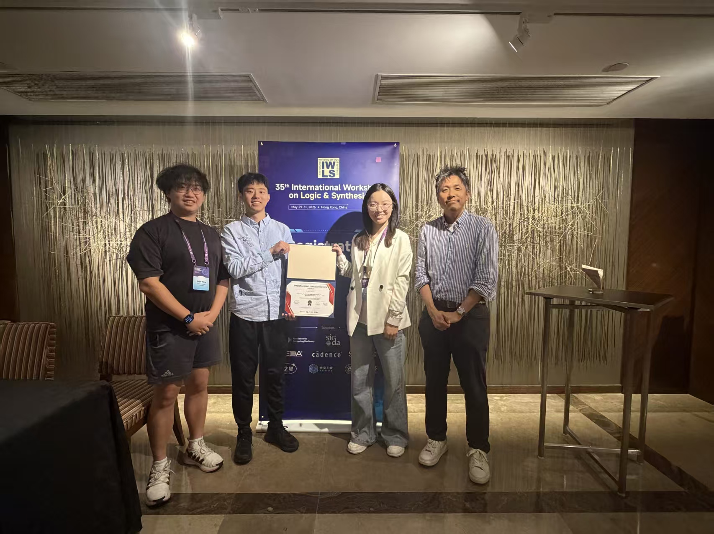
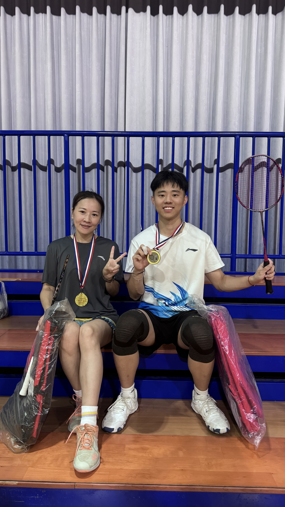

LLMs for electronic design automation
Using language models and learning methods to adapt circuit optimization to different designs and objectives.
TAPCO · MLCAD 2026COMPUTER SCIENCE · ELECTRONIC DESIGN AUTOMATION
I am a Ph.D. candidate in Computer Science at National Tsing Hua University, advised by Prof. Chun-Yao Wang and Prof. Bei Yu at The Chinese University of Hong Kong.
My research focuses on electronic design automation (EDA). I work on learning and optimization methods for circuit design, with interests in LLMs for EDA, logic synthesis and circuit reverse engineering, and physical design optimization.
I received my M.S. in Computer Science from National Tsing Hua University in 2023 and my B.S. in Computer Science and Information Engineering from Ming Chuan University in 2021. I have also contributed to computational research on dating oracle bone inscriptions.
Our team won Second Place in the MLCAD 2026 Contest. Our invited paper, TAPCO, was presented at MLCAD 2026. TAPCO
Received the Excellent Teaching Assistant Award and an Outstanding Teaching Assistant Award at National Tsing Hua University.
Received the Distinguished Alumnus Award from the Department of CSIE at Ming Chuan University.
Our team won Second Place in the IWLS 2026 Programming Contest.
Our teams won First Place in Problem C and Second Place in Problem A of the ICCAD CAD Contest. Also won First Place in the ICCAD CADathlon.
Received the Presidential Hsing Chien Award at National Tsing Hua University.
Using language models and learning methods to adapt circuit optimization to different designs and objectives.
TAPCO · MLCAD 2026Recovering high-level circuit descriptions and developing search methods for logic synthesis, with correctness checked against the original circuit.
CB-EVO · TODAES 2026; DATE 2024Combining learning and optimization for placement, gate sizing, timing, and power under practical design constraints.
HyPAS · DAC 2026Selected work. My name is highlighted; * denotes equal contribution.
ACM/IEEE International Symposium on Machine Learning for CAD · Jeju, South Korea, Sep. 7–9, 2026
ACM/IEEE Design Automation Conference · Long Beach, California, USA, Jul. 26–29, 2026
ACM Transactions on Design Automation of Electronic Systems · vol. 31, no. 6, pp. 119:1–119:26, 2026
Journal of Digital Archives and Digital Humanities · vol. 15, pp. 1–35, Apr 2025
IEEE International System-on-Chip Conference · Dresden, Germany, Sep. 16–19, 2024
IEEE/ACM Design, Automation and Test in Europe · Valencia, Spain, Mar. 25–27, 2024
IEEE International Conference on Computer Design · Hong Kong SAR, China, Nov. 16–18, 2026
ACM/IEEE International Conference on Computer-Aided Design · San Jose, California, USA, Nov. 8–12, 2026
ACM/IEEE Design Automation Conference · Long Beach, California, USA, Jul. 26–29, 2026
IEEE/ACM Design, Automation and Test in Europe · Verona, Italy, Apr. 20–22, 2026
IEEE/ACM Design, Automation and Test in Europe · Verona, Italy, Apr. 20–22, 2026
IEEE International VLSI Symposium on Technology, Systems and Applications · Hsinchu, Taiwan, Apr. 13–17, 2026
IEEE International Symposium on Quality Electronic Design · San Francisco, California, USA, Apr. 8–10, 2026
IEEE International Symposium on Quality Electronic Design · San Francisco, California, USA, Apr. 8–10, 2026
IEEE International Symposium on Quality Electronic Design · San Francisco, California, USA, Apr. 8–10, 2026
IEEE International SoC Design Conference · Busan, South Korea, Oct. 15–18, 2025
ACM Great Lakes Symposium on VLSI · New Orleans, Louisiana, USA, Jun. 30 – Jul. 2, 2025
ACM/IEEE Design Automation Conference · San Francisco, California, USA, Jun. 22–25, 2025
IEEE International Symposium on Quality Electronic Design · San Francisco, California, USA, Apr. 23–25, 2025
IEEE International Symposium on Intelligent Signal Processing and Communication Systems · Kaohsiung, Taiwan, Dec. 10–13, 2024
IEEE International VLSI Symposium on Technology, Systems and Applications · Hsinchu, Taiwan, Apr. 22–25, 2024
Second Place, MLCAD Contest
Agentic algorithm discovery for timing optimization
Excellent Teaching Assistant Award
National Tsing Hua University
Outstanding Teaching Assistant Award × 3
National Tsing Hua University · Aug 2025, Feb 2026, Aug 2026
Distinguished Alumnus Award
Department of CSIE, Ming Chuan University
Second Place, IWLS Programming Contest
International Workshop on Logic & Synthesis
Hsinchu City Outstanding Youth
College / University Division
First Place (Problem C) & Second Place (Problem A), ICCAD CAD Contest
International Conference on Computer-Aided Design
First Place, ICCAD CADathlon
Programming competition in electronic design automation
Presidential Hsing Chien Award
National Tsing Hua University · One of 13 university-wide recipients
Second Place (Problem A) & Honorable Mention (Problem B), ICCAD CAD Contest
International Conference on Computer-Aided Design
Second Place, ICCAD CADathlon
Programming competition in electronic design automation
Synopsys – Prof. Chung Laung Liu Ph.D. Scholarship
Synopsys
Qilin Cup, Integrated Circuit EDA Elite Challenge
First among 400+ teams
Honorable Mention (Problem A), ICCAD CAD Contest
International Conference on Computer-Aided Design
Third Place, EDAthon
Electronic design automation competition
First Place (Problem A), ICCAD CAD Contest
Learning arithmetic operations from gate-level circuits
Mainland China Student Scholarship
National Tsing Hua University
Silver Award, ICPC Asia Taipei–Hsinchu Regional
International Collegiate Programming Contest
Outstanding Contribution Award
Department of CSIE, Ming Chuan University
First Place, MCU Programming Contest
Advanced Division · Two consecutive editions
Honorable Mention, Central Taiwan Programming Contest
Honorable Mention, TOPC
Taiwan Online Programming Contest
Bronze Award, ICPC Asia Taipei–Hsinchu Regional
Silver Award, TOPC
Taiwan Online Programming Contest
Silver Prize, NCPU
National Collegiate Programming Contest for Universities
Honorable Mention, NCPC
National Collegiate Programming Contest · Three editions
First Place, Intercollegiate Freshman Cup Programming Contest
Third Place & Popularity Award, Three-University Software Innovation Exhibition and Competition
Ministry of Education


National Tsing Hua University
Expected Jul 2027 · Advised by Prof. Chun-Yao Wang and Prof. Bei Yu (CUHK)
National Tsing Hua University
Advised by Prof. Chun-Yao Wang
Ming Chuan University
Giga Design Automation
Shanghai · PI: Dr. Yun Shao
Shenzhen Research Institute, The Chinese University of Hong Kong
Shenzhen · PI: Prof. Bei Yu
Teaching assistant for courses in programming, computer architecture, logic synthesis, integrated circuit design, and hardware security.
Introduction to Programming
Prof. Yu-Guang Chen
Fall 2026
Hardware Security
Prof. Yu-Guang Chen and Prof. TingTing Hwang
Spring 2026
Advanced Logic Synthesis
Prof. TingTing Hwang
Spring 2025, Spring 2026
Introduction to Integrated Circuit Design
Prof. Yu-Guang Chen
Fall 2025
Computer Architecture
Prof. TingTing Hwang
Fall 2024, Fall 2025
Design Automation (I)
Prof. Jeong-Tyng Li
Spring 2025
Excellent Teaching Assistant Award (2026) · Outstanding Teaching Assistant Award (2025, Feb 2026, Aug 2026)
Verilog · C/C++ · CUDA · Python · Java · SQL · MATLAB
Expert Level, Collegiate Programming Examination · ACM-ICPC Taiwan Council
BEYOND RESEARCH
Outside research, I enjoy badminton, swimming, and table tennis.
In 2025, I won first place in badminton doubles at National Tsing Hua University's Interdepartmental Cup.
